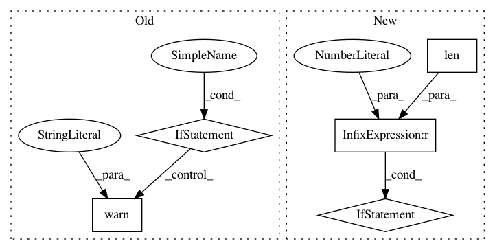

61f1de9128dad2f5262d1be8c1039c52812e5523,scipy/spatial/_spherical_voronoi.py,SphericalVoronoi,__init__,#SphericalVoronoi#Any#Any#Any#Any#,132
Before Change
"(i.e. `radius=1`).",
DeprecationWarning)
if center is None:
center = (0, 0, 0)
warnings.warn("`center` is `None`. "
"This will raise an error in a future version. "
"Please provide a coordinate "
"(i.e. `center=(0, 0, 0)`)",
DeprecationWarning)
self.points = points
self.radius = radius
self.center = np.array(center)
self.threshold = threshold
After Change
self.points = points
self.radius = radius
self.threshold = threshold
self._dim = len(points[0])
if center is None:
self.center = np.zeros(self._dim)
else:
self.center = np.array(center)
// test degenerate input
self._rank = np.linalg.matrix_rank(self.points - self.center,
tol=self.threshold * self.radius)
if self._rank <= 1:
raise ValueError("Rank of input points must be at least 2")
if cKDTree(self.points).query_pairs(self.threshold * self.radius):
raise ValueError("Duplicate generators present.")
radii = np.linalg.norm(self.points - self.center, axis=1)
In pattern: SUPERPATTERN
Frequency: 3
Non-data size: 5
Instances
Project Name: scipy/scipy
Commit Name: 61f1de9128dad2f5262d1be8c1039c52812e5523
Time: 2019-11-11
Author: pete.mahler.larsen@gmail.com
File Name: scipy/spatial/_spherical_voronoi.py
Class Name: SphericalVoronoi
Method Name: __init__
Project Name: onnx/onnx-tensorflow
Commit Name: 6d8fd50a05261bd3978bbde4ed3831ef38a9b13d
Time: 2017-10-31
Author: tjingrant@gmail.com
File Name: onnx_tf/backend.py
Class Name: TensorflowBackend
Method Name: _conv
Project Name: pymc-devs/pymc3
Commit Name: d15d9ad19021a8a3f26a86fbc6b71838ac37e7d1
Time: 2017-03-30
Author: jonathan.h.friedman@gmail.com
File Name: pymc3/distributions/multivariate.py
Class Name: MvNormal
Method Name: __init__